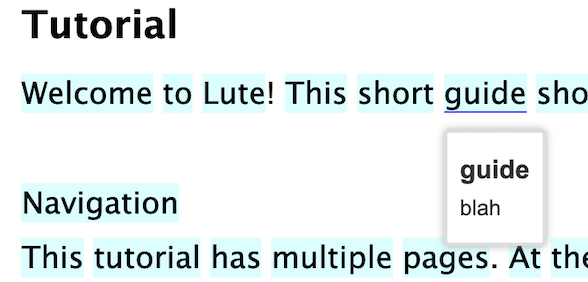

Bulk term import
If you have existing vocabulary lists, you can bulk import new Terms, or update existing Terms, with a properly-formatted CSV file.
From the menu, click Terms > Import Terms. Choose the CSV file, and indicate if you want to import new Terms, update existing ones, or both.
CSV File Format
- The CSV file should be properly formatted; i.e., carriage returns in fields are allowed, but the field should be enclosed in quotes.
- The first line of the CSV file must have the field headings:
language, term - The first line of the CSV file may also have any of these headings:
translation, parent, status, tags, pronunciation, link_status - These field names are ignored:
added - Fields can be in any order.
- An error is raised if the file contains other headings.
Field notes
| Field | Required | Notes |
|---|---|---|
| language | Yes | Must be the name of one of the languages you have saved in Lute |
| term | Yes | The new Term |
| translation | ||
| parent | The "parent" of this term (e.g., an infinitive form of a verb, etc.). This will automatically create the parent term if it doesn't exist already, or if it's not created in the same import file. If a term has multiple parents, you can enclose the list in quotes, and comma-separate the parents (e.g., the term se sienta could have parents "sentirse, sentarse". | |
| status | One of 1, 2, 3, 4, 5, W (for Well-Known), or I (for Ignored). If missing, it's set to 1 | |
| link_status | Y or blank. If Y and this term has a single parent, its status is linked to the parent status | |
| tags | A comma-delimited list of tags to add to the Term | |
| pronunciation |
Examples
ex. 1 - single record
The simplest example. Note that the tags animal, noun must be enclosed in quotes.
language, term, translation, parent, status, tags, pronunciation
Spanish,gato,cat,,W,"animal, noun",GA-toh
ex. 2 - carriage return in field
language,term,translation,parent,status,tags,pronunciation
Spanish,gato,"A cat.
A house cat.",,1,"animal, noun",GA-toh
This would create a term "gato" with the translation "A cat (carriage return) A house cat".
ex. 3 - parent record
language,term,translation,parent,status,tags,pronunciation
Spanish,gatos,cat,gato,W,,
This would create the term "gatos" (status = Well Known), and also the term "gato", setting "gato" as the parent for "gatos" (the plural form).
Parent records may be useful, for example, if you're learning conjugations of irregular verbs.
ex. 4 - translation only
language,term,translation
Spanish,gato,cat
ex. 5 - multiple parents
language,term,parent
Spanish,se sienta,"sentirse, sentarse"
Creating CSV files
The easiest way to create properly-formatted CSV files is probably through something like Excel or Google Sheets. Create a sheet with the correct headings. You can enter carriage returns into a given cell using something like Shift-Return, or Ctrl-Return ... depending on your system. Then export that as a CSV using File > Download > Comma Separated Values.
Using Google Sheets, you might also be able to get some basic translations. For example, if I have "colima" in cell B2, the formula =GOOGLETRANSLATE(B2,"es", "en") in cell B3 would give "hill".
Importing new terms as "Unknown"
You can import terms to act as "placeholders" for when you encounter them. This may be useful for sharing vocabulary lists or prepopulating your term database without impacting your reading stats.
For example, suppose I had the following import file:
term,language,translation
guide,English,blah
I can import this file and specify that I want any new terms to be "Unknown" as follows:

When I do so, the term still shows up as "unknown" when reading, but it will be pre-populated with the imported data:
